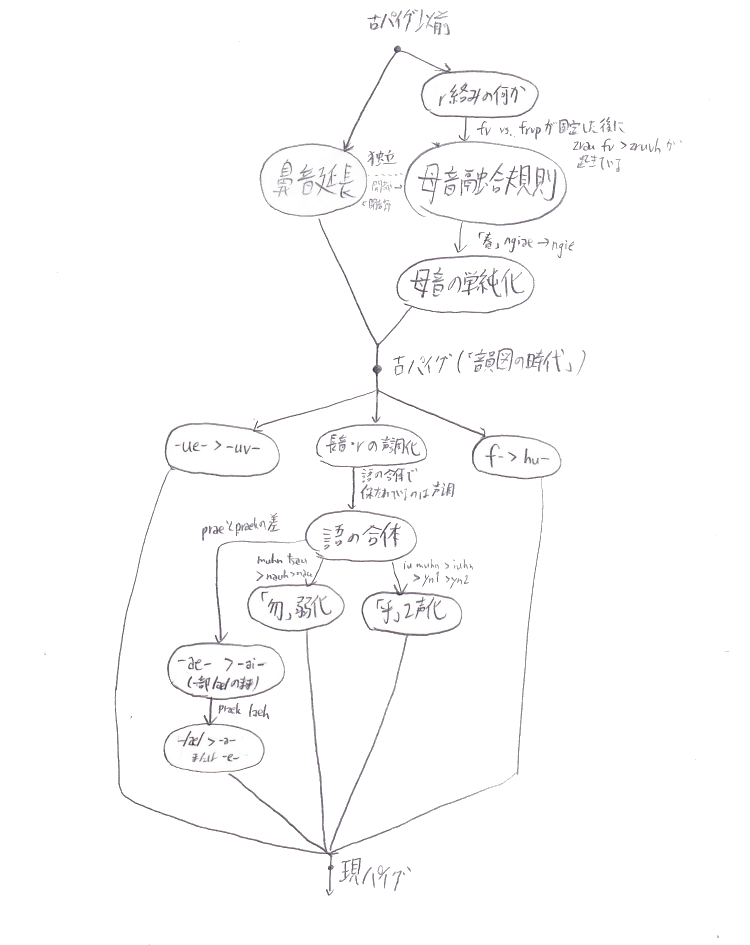
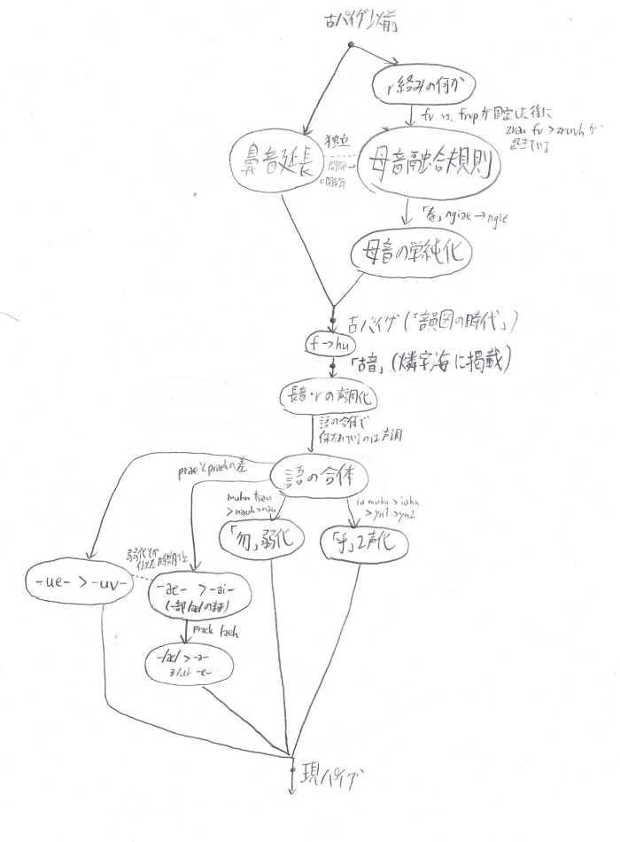

以下は考察ログであり、設定集はこちらに置いてある。
この記事を書いている段階（2017/11/09 23:00あたり）以前の話をまずまとめておく。
2017-10-15 16:12:09: 悠里広報の115字を収集 2017-10-15 16:36:45: 「神」やパイグ将棋系が欠けていることに気づく。 この辺りから、「頻用字を選出する」というよりは、「とりあえず現世で作った燐字を全部集めなくては」という方面にモチベが移動する。 2017-10-15 17:04:47: パイグ語文献をひたすら漁って字を集め始める。「類為貝刀声」「家善友美」「受与力須」「而即」 「御再乎於遠悪現(→真)噫」「雪夏冬」を発掘して17:25:11。 2017-10-15 18:05:41: 止広激付端律集を発掘し、「せっかくならパイグ音との対応表を作れば便利では？」と思いはじめる 2017-10-15 18:18:24: パイグ語漢字転写早見表が作成される 2017-10-19 01:33:21: 既にあったパイグ語OTM-JSON（21語のみ）をスクリプトによる自動登録で142語に増やす 2017-10-21 09:21:37: パイグ語から燐字を入力できるようにする 2017-10-21 16:41:40: 後に「パイグ語整理計画」と呼ばれることになる、諸文献の照らし合わせによるパイグ音確定作業が開始される。 なお、この作業には上記の入力システムが活躍した。この過程で旧綴り（「力」piuなど）も一掃される。 2017-10-23 18:23:12: パイグ語OTM-JSONがZpDIC-Onlineで公開される。 2017-10-24 19:36:56: パイグ語整理計画が一段落する。 2017-10-24 20:37:28: と思いきやPDIC辞書があったので、そのcsvをもらう 2017-10-25 06:09:xx: csvをGoogle Spreadsheetに変換する 2017-10-25 06:18:09: パイグ語漢字転写早見表と照らし合わせたところ、様々な案件が発生する。 2017-10-26 22:24:21: PDIC版との照らし合わせで74字追加される。 2017-10-27 10:26:15: PDIC版に基づき、ZpDIC版に語義が大量に追加される。という感じで、パイグ語辞書が充実してきた。
11月5日の13:30あたりから、どうやら「古パイグをやろう」という話になったらしく、17:00あたりまで作業をする。19:45あたりから作業が再開され、翌日01:00あたりまで作業が続き、古パイグの体系・古パイグでの再構音・韻図の韻名と声母名などを創作し終わる。これについての詳細は1章に記述することとする。
その結果を見たfafs falira sashimiから、11月6日の09:42:05に「ファスマレー語をすっ飛ばさないでもらえるかね」という指摘が来た。「祖語からの経過を描いて、ファスマレー語を飛ば」し、「既にある設定でその上私が作った物を無視したというのは癪に障」る、と指摘された。なお、ファスマレー語をすっ飛ばした真の理由は、j.vがファスマレー語資料の存在を知らず、syがラネーモル語とファスマレー語を取り違えていたことから発生した珍事だった。
さて、ファスマレー語が無視されている現状を改善すべく、資料を要求したところ、「資料そのものの公開は難しい」と言われ、j.vは不審に思う。また、ファスマレー語の体系・語形があまりにも他のラネーメ言語と合わないことから、「どうしようなぁ」となる。結果、なんやかんやあって、改定前ファスマレー語は「完全なアポステリオリ言語であ」り、かつアポステリオリ言語のためにパイグ・アイツォ・アイル・アイラニーヤ・タカン・エッツィアを全て改定するのは流石に「おどろおどろしい」ので、改定前ファスマレー語は廃止されることが決定し、ラネーメ言語史の創作として改定後ファスマレー語を新規に創作していくこととなった。
ラネーメの用語では上声という。
頭子音（IPA擬音表記）
| 軟 | 後軟 | 硬 | 後硬 | 閉 | 後閉 | 開 | 後開 | |
| 口端 | p | pɹ(pʰ) | b | bɹ(bʰ) | m | mɹ | f | fɹ |
| 口刀 | s | ʂ | z | ʐ | ʃ | ɕɹ | t͡s | t͡ɕ |
| 味識 | t | ʈ | d | ɖ | n | ɳ | ɾ | ɭ |
| 口門 | k | kɹ(kʰ) | ɡ | ɣ | h | x | ʔ | ŋ |
赤字は特に説が割れている設定のもの。場合によっては非真理になるかもしれない。
頭子音（リパーシェなどに基づかないラテン字表記；便宜上「古牌拼」と呼ぶ）
| 軟 | 後軟 | 硬 | 後硬 | 閉 | 後閉 | 開 | 後開 | |
| 口端 | p | pr | b | br | m | mr | f | fr |
| 口刀 | s | sr | z | zr | sh | shr | ts | tsr |
| 味識 | t | tr | d | dr | n | nr | l | lr |
| 口門 | k | kr | g | gr | h | hr | (zero) | ng |
頭子音（韻図の声母による表記）
| 軟 | 後軟 | 硬 | 後硬 | 閉 | 後閉 | 開 | 後開 | |
| 口端 | 力 | 風 | 箱 | 圧 | 大 | 汝 | 処 | 龍 |
| 口刀 | 嗅 | 席 | 祖 | 来 | 花 | 裁 | 広 | 彼 |
| 味識 | 終 | 茶 | 島 | 集 | 静 | 水 | 倉 | 新 |
| 口門 | 火 | 筆 | 層 | 祭 | 心 | 骨 | 王 | 冠 |
ラネーメの用語では下声という。
表でスラッシュで区切られているものはIPA擬音 / 古牌拼
| 無周 | 光周 | 闇周 | |||||||
| - | -p | -t | -k | -m | -n | -ŋ / -ng | |||
| 光軸 | 短 | a / a | 噫 | 同 | 加 | 北 | 皇 | 識 | |
| 長 | aː / ah | 此 | 四 | 互 | 書 | 母 | 出 | ||
| 短 | æ / ae | 我 | 労 | 善 | 戦 | 在 | |||
| 長 | æː / aeh | 将 | 倒 | ||||||
| 短 | ɔ / au | 形 | 長 | 傾 | |||||
| 長 | ɔː / auh | 門 | 獣 | 深 | 文 | 馬 | |||
| 闇軸 | 短 | ə / v | 猫 | 地 | 机 | 如 | |||
| 長 | əː / vh | 全 | 言 | 雪 | 絵 | 月 | |||
| 短 | e / e | 春 | 星 | ||||||
| 長 | eː / eh | 万 | |||||||
| 短 | o / o | 墨 | 声 | 草 | 色 | 三 | |||
| 長 | oː / oh | 山 | 手 | 季 | 行 | 積 | 悪 | ||
| 前後軸 | 短 | i / i | 反 | 極 | 蜜 | 族 | 金 | ||
| 長 | iː / ih | 男 | 国 | 正 | 機 | 紙 | |||
| 短 | u / u | 物 | 川 | 人 | 神 | ||||
| 長 | uː / uh | 銭 | 鳥 | 毎 | 守 | 無 |
ラネーメの用語では下声行という。
| 素 | - |
| 前 | -i- |
| 後 | -u- |
ここでいう「祖語」は一般に古パイグ以前の音韻を指し、要するにファスマレー語の前後どちらも指す。
祖語で短母音であったものについても、「鼻音韻尾」かつ「後子音でない」という条件が満たされた語は古パイグに至る過程で長母音化した。これを俗に「鼻音延長」と呼ぶ。故に、古パイグにおいて、短母音かつ鼻音韻尾である音節は基本的に必ず後子音である。
ただし、「如」vmと「即」hvmは頻用する機能語であるため適用されなかった。「御」amと「清」linに適用されなかった理由は不明である。
祖語の母音連続が古パイグに至る過程で融合した際の規則のこと。なお、あとで言及する「語の合体」とは明確に区別すること。
周: *sVV > sre cf. ceyuu.ar 糸: *bVV > brae cf. baeai.ar 端: *tVV > trau cf. taupwo.ar 春: *aiyoi > ngiae > ngie 冠: *airy > ngae 従: *tiuah > triah 茶: *tVV > tria cf. tisia.ar
sreが闇軸であることについては、さらなる研究が待たれる。
高: zrau fv > zruvh 山: tsoe > tsoh cf.(ve)zoe.ar 箱: *buou > buh 夏: xVV > shoh cf. xeh^eu.ar 広: tsVV > tsivh cf. zieo.ar 乎: iu muhn > iuhn 倉: lVV > lih cf. lisua.ar 万: *weci > ueh 層: gVV > giuh cf. guyao.ar 満: *bowa > boh 豊: hoh cf. xufoa.ar 包: *buou > buoh 認: hioh cf. hikoo.ar 少: hruvh cf. huroe.ar 煙: loh cf. lohu.ar 米: moh cf. mova.ar 酒: noh cf. naiwou.ar 片: tsuoh cf. chuwo.ar 件: uoh cf. wuo.ar
-iae-は-ie-へと変化したので、古パイグに-iae-は無い。
frvpとfvが同根であることから、「古パイグにおいてもrの有無は交替しうる」または「古パイグ以前に交替があり、それがrの有無として反映されている」のどちらかであることが分かる。
ng-とされている音は祖語の*rである。表の形式からしてもŋの位置に入りそうなのはʔɹなわけで、何故ng-と転写されているのかは謎である。
それぞれ以下のように変化した（リパーシェ転写）。
| 軟・後軟 | 硬・後硬 | 閉・後閉 | 開・後開 | |
| 口端 | p | b | m | hu |
| 口刀 | c | s | x | z |
| 味識 | t | d | n | l |
| 口門 | k | g | h | (ゼロ) |
a → a æ → ai ɔ → au ə → e e → ei o → o i → i u → u
なお、音素列/iu/は現代パイグ語の音韻としては[y]であり、正書法上のリパーシェ転写もyであることに注意。
長音であったものが1声、長音ではなくかつ後子音であったものが2声。
-p, -t, -k, -m, -nはそのまま保存されている。-ngの仕様については未創作。
先に言及した「母音融合」とは明確に区別すること。
語が合体した場合、後の語の声調が保たれる。但し、後の語が0声である場合は前の語の声調が保たれる。
律: iahk < iuh ahk 巫: truk < tram sruk 兵: krauk < kaik sruk 車: kauhn < kihk mauhn 赤: kohk < kahn pok 牌: praek < prae go 黒: fruok < fruo pok 白: liohk < lvht pok 党: tsrit < tsuih drat 青: nruok < nrua pok 勿: (nau <) nauh < muhn tsau
なお、後にpai2に変化したpraeから、/æ/が残存しpek2となったprae go > praekが生まれていることから、少なくともこの語については-ae- > -ai-の変化以前に起きた変化であることが分かる。
また、これらの語は韻図に載っていないことから、韻図の時代より後に生じた変化であることが分かり、また保存されるのが声調であることから、これらの語が形成された頃には長音・後子音の声調化は起こっていたものと考えられる。
1. と 2. は基本的に真理設定を書くように努めたので、せっかくならいくつか裏話をメモっておく。
これは、アイル語とパイグ語を比較していたら全くの偶然により発掘された規則である。気づいた時はめっちゃ楽しかった。
これは、パイグ語の1声がやたら多いことから発見された規則である。長母音はアイル語には残存していない（これも今回の調査によって生まれた設定）とはいえ、特に鼻音終わりにおいてやたら多いということ、既に再構している「母」mahmなどと合わないこと、などを一気に解決できる面白い説であったため、採用された。
これは、もともと「美軸雪」(hem1 lea1 let1)を説明するために考えた設定である。ちなみに、kya1という綴りは「正書法整理前にリパラオネ人などがそう知覚した」というだけであって、綴りの揺れであって音の揺れではないと考える。
まあ当然「春」の説明のためなのだが、割と自然な変化だしセーフでしょ。
韻図上の位置を表す表記は、「火善素 火此前 風我素 筆噫後 龍墨後 風噫後」のようにすることとなった。せっかくなので、古牌拼から伝統表記に変換するスクリプトを組んだ。
このスクリプトを組む過程で気づいた諸々を以下に記す。
表のラテン字転写のところで、ASCIIのg(U+0067)ではなくIPAのɡ(U+0261)が使われていた箇所を修正。
紙母の位置が違ったので修正。
「混」がtehnとなっているが、体系的な再構ならtvhnになるはず。直してもいいのだが、uehがuvhになって現ue1になったのと同様の現象を-ehnに認めてもいいかも。ちょうどパイグ語にeinがないことだし。
というか、「星」pretもその類だな。こいつは韻図に載せてしまっているからめんどい。
で、調べてみたらそもそもパイグのeiって今のところ開音節語しかない。ふーむ。
@s_y15 『周: *sVV > sre cf. ceyuu.ar、規則に従ってない(eは闇母音)』『「星」、pretなので規則通りだとpeit2だが、pretで韻図に載せちゃったし、恒例のごとく「-eitは-etに合流したのでパイグ語にない」を使うかどうか』『それに乗じて、「混」をtehnのまま残すか否か』
— .sozysozbot.@hsjoihs (@sosoBOTpi) 2017年11月11日
『おや？』
— S.Y@タカン系パイグ系日本人 (@S_Y15) 2017年11月11日
『現代のeiって末子音付かないしeでも良さそう』
ということで、採用となった。「古パイグ→現パイグ」に「古パイグの-e-は閉音節であった時は-ei-ではなく-e-になった」が追加、韻図の-ehnに「混」が掲載。
さて、上に書いた真理設定を再掲載するのはあまりにもアレだし、最新版の真理設定を単離したファイルを作るべきだな。一応Google Docsにあるけど。
作った。
例外であるsreについては、そもそも母音融合ではなく、アイル語のceyuuがcey+接尾辞-uuであるとすれば説明できる。ということで、そうなった。
SY「乎、新しそうだし韻図に載っていなさそう」とのことなので、「乎」は母音融合ではなく語の合体ということになった。そうすると、母音融合規則によってできる語は全て開音節語ということになる。
音韻変化の依存関係を有向グラフでまとめてみた。実際に暦上のいつぐらいに割り当てるかは今後考えていくこと。
@s_y15 古パイグに至る過程のhiah < /hi:a/とかziah < /zi:a/とかって「韻図の体系に載せるため」みたいな話になってたけど、韻図以前のaiやauが古パイグでæとɔになっているように、単純に「下降二重母音が消えた」とかでもいいんじゃないかなぁ
— .sozysozbot.@hsjoihs (@sosoBOTpi) 2017年11月11日
ということで、「下降二重母音の消失」を規則に載せた。
祖語やアイル語を見る限り、-ngになりそうなやつは「清」lin < *lingq と「付」krun cf. kunge.arぐらいである。漢語諸方言で-m / -nが残って-ŋが残っていない例が乏しいことから、古パイグの段階で既に-ŋの例がかなり少なかったという説明が適切であろう。
ちなみに、これにより韻尾の頻度は次のようになる。
| 開音節 | 121 |
| t | 45 |
| k | 31 |
| n | 22 |
| p | 18 |
| m | 18 |
| ŋ | 2 |
あ、あと、「清」が伸びていない理由は、-̵ŋの前ではなぜか鼻音延長が起こらなかったからである。なぜだろうなぁ。
「清」と「付」を変更して、韻図に載せた。また、-ngが-nに合流したことを書いた。
「後」が未造語・燐字未収録であることが判明したので、収録し造語（現パイグyp；古パイグiup；同根アイルyubui）してもらった。するとup韻が無いので「後韻」となるはずだが、「iup;王後前」は分かりにくいので、急遽-up韻をもう一つ造語することにした。どうせいつか作られる語なんだしセーフやろ。ということでblubla.arからbrup > bup2「歪」が造語されることに。
ということで、-up韻は歪韻になった。
「之」は祖語で*anlであるため、古パイグでangであったという説がある。-ngなら鼻音延長も起きないし、文法語なら弱化が起きても違和感はない。ということで、古パイグではangだったことになった。
「遠い」があって「近い」が無いのはアレなので造語することとなった。
アイル語で「近い」はceixeiである。ということは、パイグだとceiとかそこら辺になりそうである。
さて、既に「周」cei2という字音があり、こちらはアイル語のceyuuと結び付けられている。ここで、ceyuuとceixeiが同根語なのではないか？という案が出た。祖語はsreiであり、それが何らかの接尾辞/uu/と結合したものがceyuu、反復による/sreisrei/がceixeiとなった、という案である。
となると、「ラネーメ圏ではこのceyuuとceixeiに当たるそれぞれの語に字が振られ、『周』と『近』という2つの燐字になったが、パイグ・アイツォでは分化しなかったため『周』と『近』は異体字扱いになった」または「sreiに当たる単一の字が存在したが、その字の2つの異体字がアイル圏ではそれぞれceyuu相当とceixei相当に役割が固定された」と考えるのが良さそうとなった。
ということで、燐字としては「近」と「周」の2字が存在するが、パイグ語では共にcei2であり、同一語である、ということとなった。（なお、同様の例としては、「在」と「如」が元々は単一の字であったらしい）
辞書には、
「周」の異体字である「近」を使うこともある。なお、アイル語ではceyuu「周囲の；周辺の」に「周」を使い、ceixei「近い；近接した」に「近」を使う。
と載せることにした。
アイツォ語も古パイグに由来する言語で、「光山」などはそのままaik2 zo1である。しかし、パイグでzep1である「言」がzepという資料がある一方で、11月11日のS.YのDMに「zep2はアイツォだなぁ」とあったりする。また、「撃」についても、パイグ語はkut2なのに対しアイツォ語はkut1である。（参考：例1、例2、「アイツォなのでkut1で正しい」という発言）
とか言ってたらfafs氏がリパライン倉庫にあるアイツォ語の記事を手放してこちらに託してきた。とりあえず魚拓とローカルコピーを作成。さらに辞書ファイルも入手。
ということで、アイツォ語も見ながら古パイグとかをやっていこう。
燐字海のパイグ語の欄には「古音」という欄がある。字数も多くないので現状の全記事のを載せると、
「古音」 「古パイグ」 一 ret ngvt < *las 二 rik ngik 三 rom ngom < *lumi 四 aap ahp < ahm < *ngam 五 uun uhn < *slqna 六 uun-ret nrvt < uhn ngvt 七 uun-rik nrik < uhn ngik 八 uun-om nrom < uhn ngom 九 uun-aap nahp < uhn ahp 光 raik ngaek 闇 huet fvt 水 nrua nrua 火 kaan kahn 皇 tram tram 神 trun trun 人 cruk sruk 足 xii shih 手 hoop fohp 筆 krua krua 字 maan mahn 在 raim ngaem 無 muun muhn 言 zeep tsvhp
という感じである。
まず、古牌拼(現世ラテン文字ベース)と古音リパーシェ転写の差が見て取れる。顕著に違ったり紛らわしかったりするところは青字とした。
古音リパーシェ転写：
| 軟 | 後軟 | 硬 | 後硬 | 閉 | 後閉 | 開 | 後開 | |
| 口端 | p | pr | b | br | m | mr | (後述) | (後述) |
| 口刀 | c | cr | s | sr | x | xr | z | zr |
| 味識 | t | tr | d | dr | n | nr | l | lr |
| 口門 | k | kr | g | gr | h | hr | (zero) | r |
| 光軸 | 闇軸 | 前後軸 | |||||||||||||
| 短 | 長 | 短 | 長 | 短 | 長 | 短 | 長 | 短 | 長 | 短 | 長 | 短 | 長 | 短 | 長 |
| a | aa | ai | aai | au | aau | e | ee | ei | eei | o | oo | i | ii | u | uu |
（なお、現状燐字海の記事で使われていない母音や子音に関しては、この記事を書いている最中にS.Yと話して決めた。）
さて、huetやhoopという箇所を見るに、「古パイグf > 現パイグhu」という変化は既に「古音」の時点で起きていたことが分かる。
一方、「古音」の段階ではrや長音の声調化は起こっていないことがわかる。また、「古音」で六〜九が二語として書かれていて、且つ現代パイグ音でのこれらの読みが「声調保存的な語の合体」によるものであることから、韻書にも六〜九は単一語としては載っていないであろうことなどが推察される。
また、「万」は「古音」においてもueei（ueh）であってuee（uvh）ではないということにした。-ae- > -ai- が「語の合体」以降である以上、-ue- > -uv-などについてもその辺りだろうという見当をつけてのことである。
というわけで、音韻変化の依存関係は次のようになる。
PDIC由来の、「訳語」というプロパティ欄に全部を押し込むという混淆とした記述体系を改め、品詞ごとに記述を分解した。
ただし、「訳語：→人権」などというものについてはよく分からなかったので後回し。
分解した記述をZpDIC側の「訳語」欄に持っていき、「人権」系統は「???」と改名。
辞書に漢字転写を追加しながらパイグと照らし合わせたところ、単音節語127語のうち、パイグ語と別起源と思われる語が10語、声調が異なる語が7語あることがわかった。
別起源：
ba4 声、鳴き声 ce1 十万 cut2 山 kor3 刀、切る mat ～のために mu1 千 nau1 全て、全部 pier 〜です tip 〜した tiu2 強い、鍛える
声調違い：
燐字 パイグ アイツォ 別 pau1 pao 石 sy2 siu1 目 ta1 ta2 皇 tam2 tam1 彼 zap2 zap 其 ze1 ze2 言 zep1 zep2
要するに、アイツォ語の中で、パイグ語に同源語のない語は7.9%、パイグ語と声調が異なる語は5.5%で、残る86.6%はパイグ語と基本的に一致するということが言えるわけだが、ここで着目したいのは声調違いについて。
pau1 / paoの例を除けば、基本的に歯音で始まっていることが分かる。さて、これをどう考えるか。
一つの案としては、ts / tsrやt / trが混乱した時期があったという説である。
わーいヾ(๑╹◡╹)ﾉ"
— Яйценосные Киты🐳 (@ransewhale) 2017年11月24日
そういえばそろそろ設定したい感ありますね
「どのラネーメか」「基底はリパラオネかリナエストか」とかからまずは決めていきたいですねぇ
— .sozysozbot.@hsjoihs@jekto.vatimeliju (@sosoBOTpi) 2017年11月24日
基底はリパラオネがいいかなぁと思っています
— Яйценосные Киты🐳 (@ransewhale) 2017年11月24日
ラネーメの方については古パイグ語を希望したい(TLで度々話題になるパイグ語が気になっている顔)
ということで、ホエールの担当言語は古パイグから燐字と燐字音と燐熟語を借用することとなった。
「立」と「木獣」が増えた。「木獣」はヴェフィスの借用がhup1っぽさあることに由来していて面白い。
この記事から、燐字のみにまつわる部分を「パイグ語・古パイグ・燐字などについて考察する」という記事に独立させた。以降、こちらでは独立先とは別々に、今まで通り章番号を連番に振っていく。
古パイグではmiht【大正素】であって、韻図に載っていたということになりそうだ。アイル語mitaと同根。
流石に塩はあるだろう、ということで造語となった。アイルquvoo、バートghíyoと同根のkuo1となった。
iau, uauは開音節しかないことが判明したので記載しておく。uoは普通にあるので、何らかの理由があるのだろう。どうせ古パイグにもない。
理語辞書から12句引っ張ってきて登録した。熟語の登録があまりできていないのでしていきたい。
介音uと韻尾m,nの相性はあまり良くないようだ。
結果として、
uaim → uam (uaum不存在) uain → uan (uaun不存在) uom → uem uon → uen uim → ium uin → iun
ということになった。
どんぐりの存在感が大きいので、「種」をどんぐりに当てることとした。リパライン語で造語されている語の語源であるdexu.arから、現det古dvtとした。
現代パイグ語の音節表を作った。
古牌データというスプレッドシートを立てた。この過程で幾つか話したことを書いておく。
これは、iau, uauの閉音節が古牌の時点でio, uoに吸収されたということになった。まあ、当時はそれぞれɔとoであったし、特定条件下で吸収されていてもおかしくはない。
一方、uとmnについては、「古牌の時点ではuom /uom/ は存在できた。後に二重母音化して/uəum/となった際に/uəm/に吸収された」「古牌の時点ではuihmに/uːim/などが押し込まれている可能性があり、/yːm/としてiumと合流するのは後世」ということになった。
SY「パイグ人は『標準』をなんでも『官定』と言いたがる」 j.v「辞書に載せよう」
現代パイグにはci-が無い。cy-はある。
この理由としては、前に言及した「古パイグsri-は例外的にx-に変化した。ただし、sriu-は規則通りcy-である。」が関わっていると考える。
現時点では偶然存在しない古パイグsi-も、同様にx-に変化したのであろう。もちろん、siu-があったならそれはcy-だろう。
古パイグzi-, zri-については普通に現代パイグでsi-だが、まあそれはそもそもx-の有声音が存在しないのだから当たり前である。